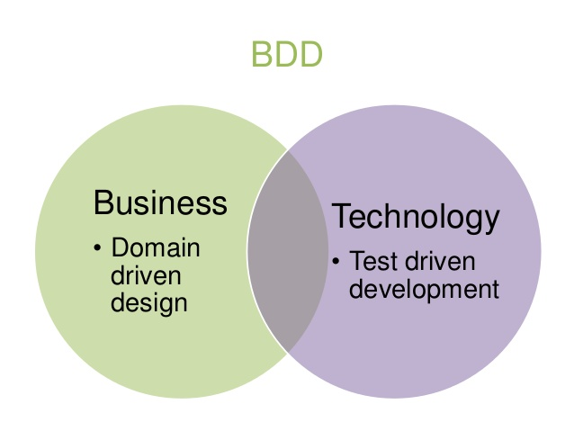

name: cover layout: true class: center, middle, cover --- #Spec driven development in Microservices ##Nikita Galkin --- layout: false .left-column[ <img width="100%" src="https://avatars0.githubusercontent.com/u/5930544?v=3&s=460"> ## Никита Галкин ] .right-column[ # Backend разработчик ## Люблю Highload, Opensource и Хакатоны ## Умею делить монолиты на микросервисы ## на PHP и Node.js ## в компания <img src="http://s.developers.org.ua/img/announces/cik.png" height="28"> Ciklum (ThomasCook) <hr/> ## <svg aria-hidden="true" class="octicon octicon-mark-github" height="28" version="1.1" viewBox="0 0 16 16" width="28"><path d="M8 0C3.58 0 0 3.58 0 8c0 3.54 2.29 6.53 5.47 7.59 0.4 0.07 0.55-0.17 0.55-0.38 0-0.19-0.01-0.82-0.01-1.49-2.01 0.37-2.53-0.49-2.69-0.94-0.09-0.23-0.48-0.94-0.82-1.13-0.28-0.15-0.68-0.52-0.01-0.53 0.63-0.01 1.08 0.58 1.23 0.82 0.72 1.21 1.87 0.87 2.33 0.66 0.07-0.52 0.28-0.87 0.51-1.07-1.78-0.2-3.64-0.89-3.64-3.95 0-0.87 0.31-1.59 0.82-2.15-0.08-0.2-0.36-1.02 0.08-2.12 0 0 0.67-0.21 2.2 0.82 0.64-0.18 1.32-0.27 2-0.27 0.68 0 1.36 0.09 2 0.27 1.53-1.04 2.2-0.82 2.2-0.82 0.44 1.1 0.16 1.92 0.08 2.12 0.51 0.56 0.82 1.27 0.82 2.15 0 3.07-1.87 3.75-3.65 3.95 0.29 0.25 0.54 0.73 0.54 1.48 0 1.07-0.01 1.93-0.01 2.2 0 0.21 0.15 0.46 0.55 0.38C13.71 14.53 16 11.53 16 8 16 3.58 12.42 0 8 0z"></path></svg> [galk-in](https://github.com/galk-in/) <img src="https://www.npmjs.com/static/images/npm-logo.svg" height="28" alt="npm logo"> [galkin](https://www.npmjs.com/~galkin) <img src="https://upload.wikimedia.org/wikipedia/en/thumb/9/9f/Twitter_bird_logo_2012.svg/1259px-Twitter_bird_logo_2012.svg.png" height="28"> [galk_in](https://twitter.com/galk_in) <img src="http://www.hoeghautoliners.com/_public/theme-hoegh/img/svg/logo-linkedin.svg" height="28"> [nikitagalkin](https://ua.linkedin.com/in/nikitagalkin) ] --- name: inverse layout: true class: center, middle, inverse --- #В чем проблема? --- layout: false class: center, middle # Бизнес решает любую проблему новым процессом --- .left-column[ ## В чем проблема? ] .right-column[ ## Бизнес решает любую проблему новым процессом: - ## Плохо! ] --- count: false .left-column[ ## В чем проблема? ] .right-column[ ## Бизнес решает любую проблему новым процессом: - ## Плохо => Будем проверять => .red[TDD] ] --- count: false .left-column[ ## В чем проблема? ] .right-column[ ## Бизнес решает любую проблему новым процессом: - ## Плохо => Будем проверять => .red[TDD] - ## Не то! ] --- count: false .left-column[ ## В чем проблема? ] .right-column[ ## Бизнес решает любую проблему новым процессом: - ## Плохо => Будем проверять => .red[TDD] - ## Не то => Делаем вместе => .red[Scrum] ] --- count: false .left-column[ ## В чем проблема? ] .right-column[ ## Бизнес решает любую проблему новым процессом: - ## Плохо => Будем проверять => .red[TDD] - ## Не то => Делаем вместе => .red[Scrum] - ## Долго! ] --- count: false .left-column[ ## В чем проблема? ] .right-column[ ## Бизнес решает любую проблему новым процессом: - ## Плохо => Будем проверять => .red[TDD] - ## Не то => Делаем вместе => .red[Scrum] - ## Долго => Автоматизируем => .red[CI/CD] ] --- count: false .left-column[ ## В чем проблема? ] .right-column[ ## Бизнес решает любую проблему новым процессом: - ## Плохо => Будем проверять => .red[TDD] - ## Не то => Делаем вместе => .red[Scrum] - ## Долго => Автоматизируем => .red[CI/CD] - ## Дорого! ] --- count: false .left-column[ ## В чем проблема? ] .right-column[ ## Бизнес решает любую проблему новым процессом: - ## Плохо => Будем проверять => .red[TDD] - ## Не то => Делаем вместе => .red[Scrum] - ## Долго => Автоматизируем => .red[CI/CD] - ## Дорого => Наймем других => .red[Outsorcing] ] --- count: false .left-column[ ## В чем проблема? ] .right-column[ ## Бизнес решает любую проблему новым процессом: - ## Плохо => Будем проверять => .red[TDD] - ## Не то => Делаем вместе => .red[Scrum] - ## Долго => Автоматизируем => .red[CI/CD] - ## Дорого => Наймем других => .red[Outsorcing] - ## Не понятно! ] --- count: false .left-column[ ## В чем проблема? ] .right-column[ ## Бизнес решает любую проблему новым процессом: - ## Плохо => Будем проверять => .red[TDD] - ## Не то => Делаем вместе => .red[Scrum] - ## Долго => Автоматизируем => .red[CI/CD] - ## Дорого => Наймем других => .red[Outsorcing] - ## Не понятно => Говорите понятно => .red[DDD] ] --- .left-column[ ## В чем проблема? ] .right-column[ # И так далее  ] --- layout: true class: center, middle, inverse --- --- layout: false .left-column[ ## В чем проблема? ] .right-column[ #Организовывать #совместную работу #разработчиков .red[эффективно] ] --- layout: true class: center, middle, inverse --- #Что такое спецификация? --- layout: false .left-column[ ##Термины ] .right-column[ # Спецификация # это контракт # между разработчиками. ] --- layout: false .left-column[ ##Термины ] .right-column[ # Спецификация # .red[не описывает] # бизнес логику. ] --- layout: false .left-column[ ##Термины ] .right-column[ # Спецификация # фиксирует договоренности, # а не описывает код. ] --- layout: false .left-column[  ] .right-column[ ## – QA информирует о баге ## – Ответственных нет, ни BE, ни FE не могут воспроизвести ## – Фронтэнд считает, что виноват бэкенд ## – Бэкенд считает, что виноват фронтэнд ## – "И вообще у нас своих багов хватает" (c) ] --- layout: false .left-column[  ] .right-column[ # Различайте # баги в логике и # баги в реализации спецификации ] --- layout: true class: center, middle, inverse --- #Составные части спецификации --- layout: false # 1. Структура данных # 2. Методы работы с данными # 3. Информирование об ошибках --- layout: false # На примере REST: <br/> ###1. Структура данных ##<strong>JSON schema</strong> ###2. Методы работы с данными ##<strong>endpoints</strong> ###3. Информирование об ошибках ##<strong>Response codes</strong> --- layout: true class: center, middle, inverse --- #Требования к спецификации --- layout: false # 1. Использование стандарта # 2. Консистентность (согласованость) # 3. Версионность # 4. Семантичность (компилируемость) # 5. Актуальность --- layout: true class: center, middle, inverse --- # Как все начиналось... --- layout: false ## – Есть монолит Backend для iOS/Android приложения ## – Большой накопленный технический долг ## – Скоро будет рефакторинг Backend-а ## – Бэклог пустой ## – Что делать? --- class: middle center  --- class: middle center  --- layout: true class: center, middle, inverse --- #Как тестировать --- layout: false .left-column[ ##Как тестировать ] .right-column[ ## – Юнит ## – Интеграционные ## – Функциональные ## – Приемочные .footnote[Стандартное деление тестов] ] --- .left-column[ ##Как тестировать ] .right-column[ ## – Unit Testing ## – Integration Testing ## – Component Testing ## – Contract Testing ## – End to End Testing .footnote[Testing strategies in MicroServices by [Martin Fowler](http://martinfowler.com/articles/microservice-testing/#conclusion-summary)] ] --- .left-column[ ##Как тестировать ] .right-column[ ## – .red[TDD] Unit Testing ## – .red[TDD] Integration Testing ## – .red[TDD] Component Testing ## – .red[SDD] Contract Testing ## – .red[BDD] End to End Testing ] --- layout: true class: center, middle, inverse --- #Что можно делать на основании спецификации? --- layout: false ## Валидировать входные данные ## Автоматизировать контрактное тестирование ## Делать mock микросервисов ## Генерировать stub данные ## Генерировать документацию ## Автоматизировать типовые действия --- layout: true class: center, middle, inverse --- #Наш опыт --- layout: false .left-column[ ## .red[Структура данных] ] .right-column[ # JSON schema ```JSON { "id": "http://example.com/entry-schema#", "$schema": "http://json-schema.org/draft-04/schema#", "title": "Example Schema", "type": "object", "properties": { "firstName": { "type": "string" }, "lastName": { "type": "string" }, "age": { "description": "Age in years", "type": "integer", "minimum": 0 } }, "required": ["firstName", "lastName"], "additionalProperties": false } ``` ] --- .left-column[ ##.red[Валидация] ] .right-column[ ```javascript var schema = require('../../schemas/user.json'); var validate = require('jsonschema').validate; Controller.prototype.validate = function(req, res, next) { var validatorResult = validate(req.body, schema); if (validatorResult.valid) return next(); next({code: 400, error: validatorResult.errors}); }; ``` ] --- .left-column[ ###.red[Спецификация] ] .right-column[ # – Наш выбор RAML # – Swagger # – Api Blueprint ##[Выбирать вам](http://www.mikestowe.com/2014/12/api-spec-comparison-tool.php) ] --- .left-column[ ###.red[Abao] ] .right-column[ ## Контрактное тестирование RAML – [Abao](https://github.com/cybertk/abao) ## Под капотом coffeescript и mocha ## Валидирует схемы и коды ## [Пример](https://github.com/galk-in/abao_example) ] --- layout: true class: center, middle, inverse --- #To be continued in Log Driven Development